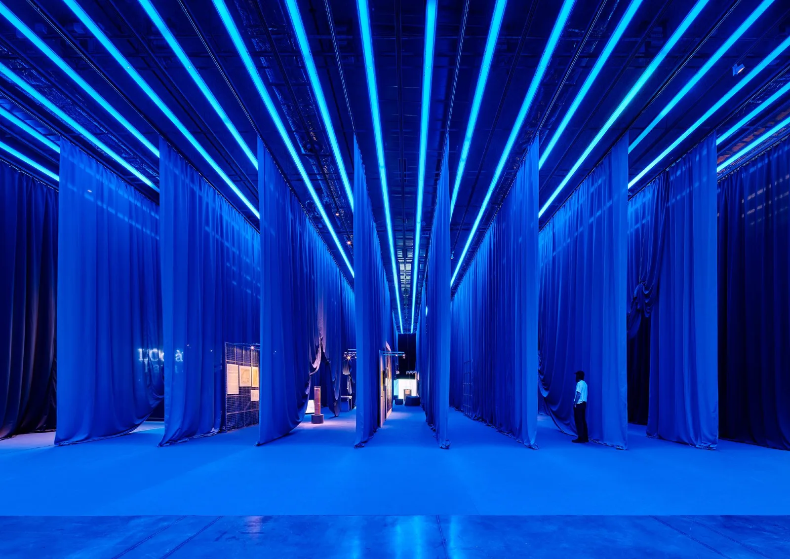
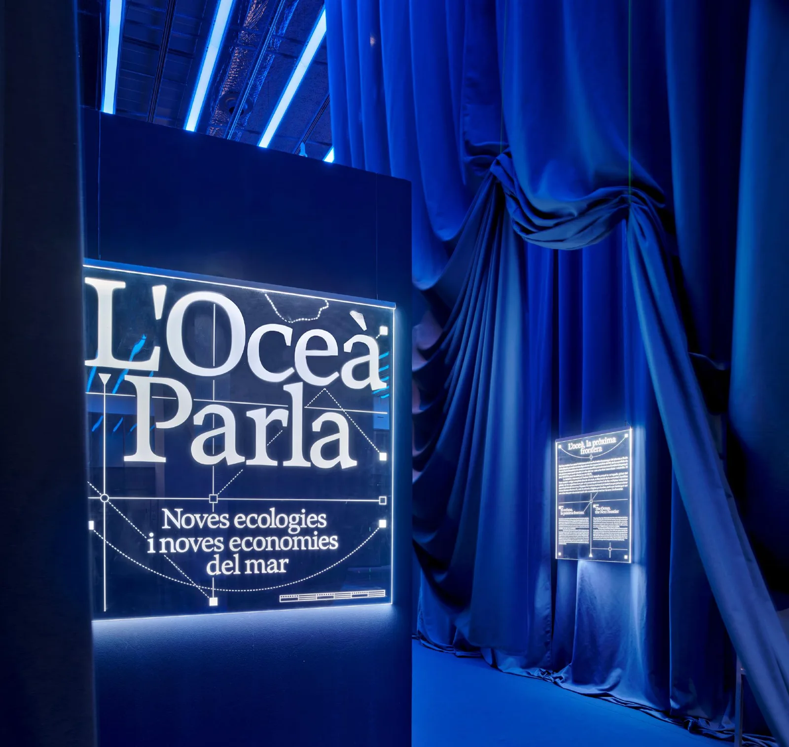
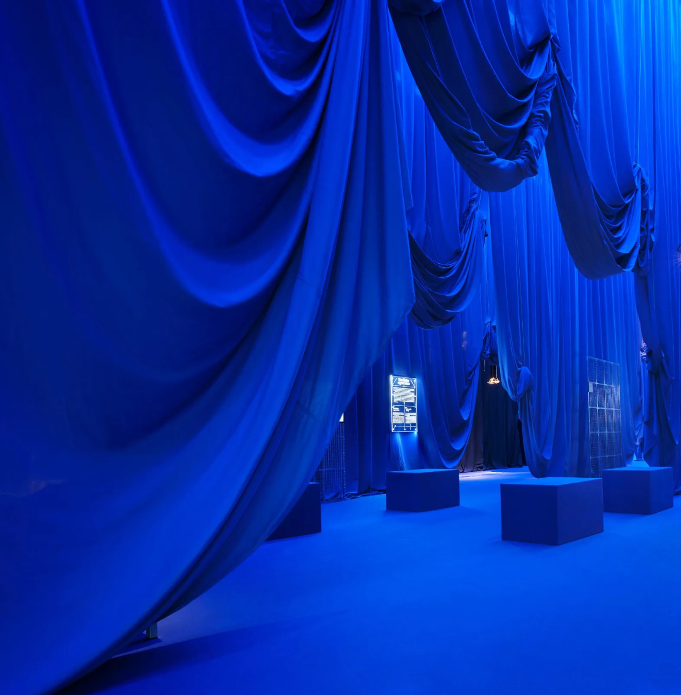
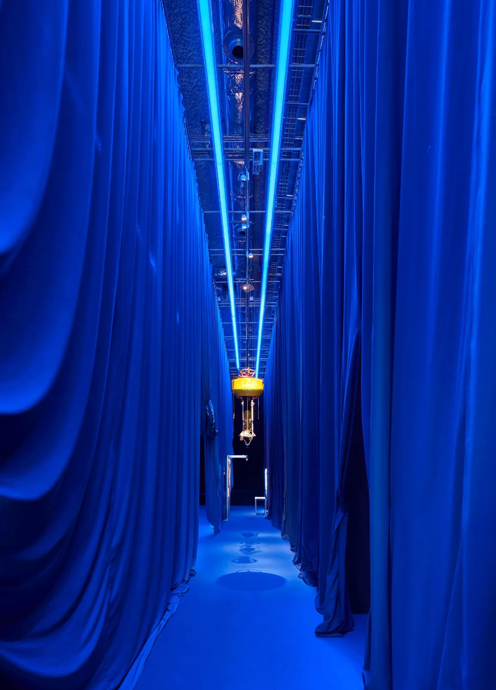
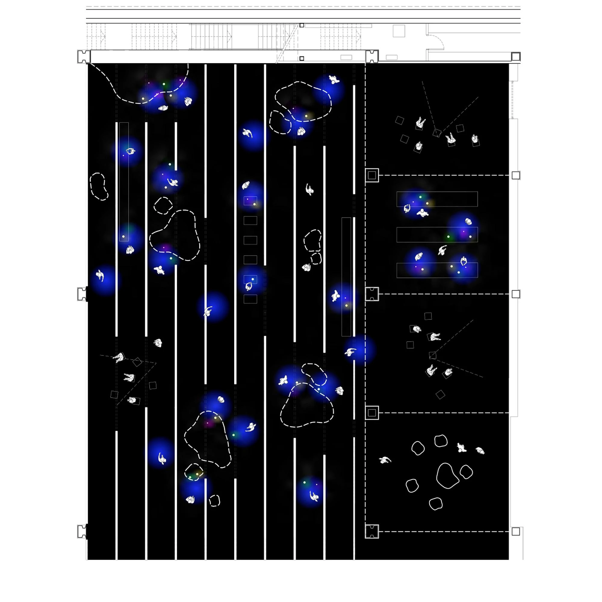
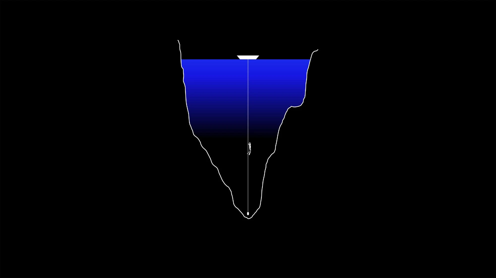
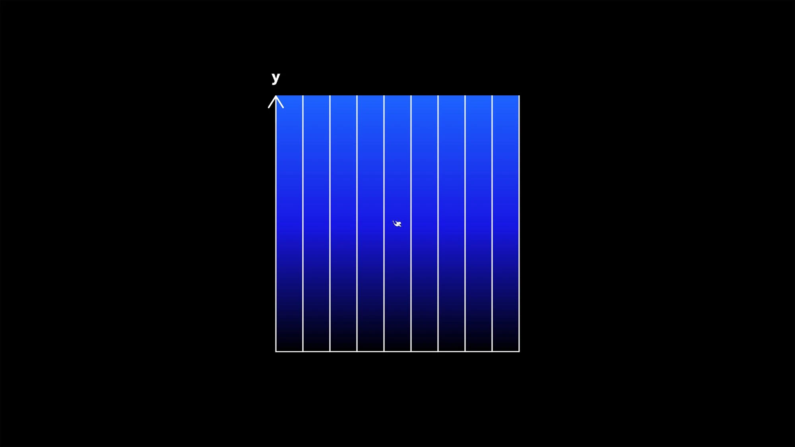

Exhibition installation · 2024
Océano
Studio Animal · Javier J. Iniesta
Barcelona, Spain
An exhibition at DHub in Barcelona, with suspended fabric defining spaces for displays and visitor movement.
Deep blue covers the floor, suspended fabric and display elements, drawing them into one continuous visual field. This saturation creates an enveloping, almost underwater atmosphere. Folds in the fabric and strips of light give depth and direction within the hall.


Relevant connections
SHOW
The installation provides a setting for exhibits and the communication of the exhibition’s content.
Images and drawings / 07











